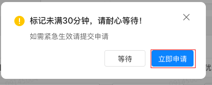
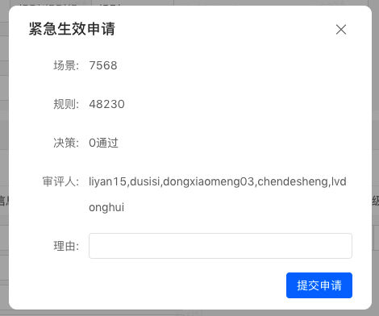
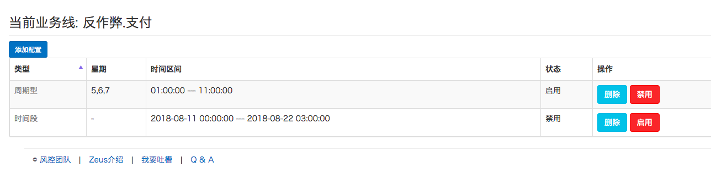
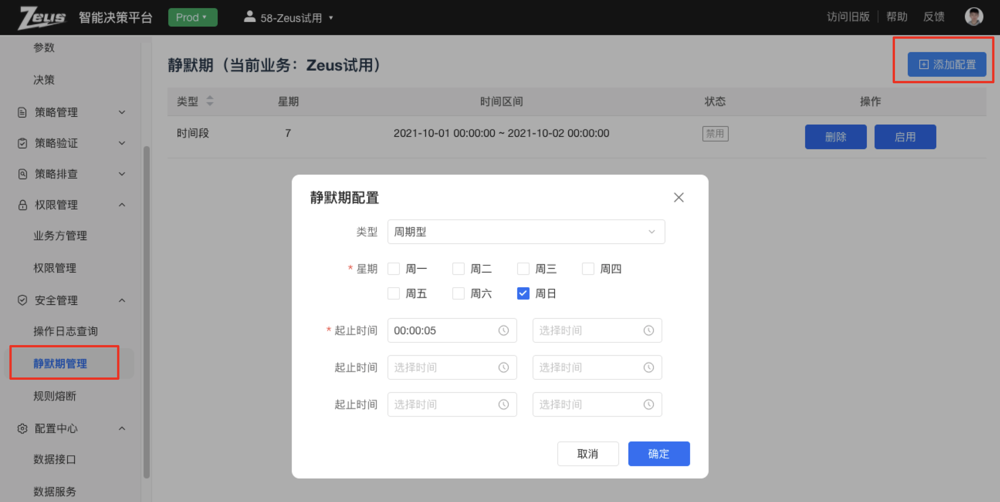
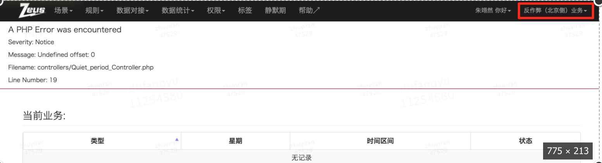

说明：Zeus静默期使用指南
1.静默期要解决的问题
规避高峰期上线规则带来的风险。
2.如何定义高峰期
- 各业务可自己定义时段
- 时间段可以是多段，如14:00 -15:00,17:00-19:00
- 联系 @朱翊然 进行定制。
备注：高峰期对整个业务组有效。
3.哪些操作在静默期被禁止
- 修改规则在场景中的状态、优先级、决策（状态变更含生效改为标记、标记改为生效）
- 规则或因子的强制更新
- 参数的任何修改
4.哪些操作在静默期是允许的
- 新建或修改标记规则
- 将标记规则配置在场景中
- 修改未被引用的因子
5.如何解除静默期限制
点击申请两小时解禁即可：
-
当前时间段在静默期，禁止敏感操作，如有特殊情况，选择“立即申请”


6.各业务静默期
|
业务 |
静默期时段 |
|---|---|
|
反作弊 |
10:30-14:00;17:00-20:00 |
|
支付风控 |
待补充 |
7.静默期配置页面说明
|
旧版 |
 |
|---|---|
|
新版 |
 |
- 当前业务线：登陆用户只能给当前所在业务线进行静默期配置。若当前用户为子业务管理员，那么将给子业务配置静默期，非子业务管理员仅能查看静默期时间；
- 添加配置：可添加【周期型】和【时间段】两种类型的静默期。一条业务线具有多条静默期配置；
- 禁用按钮：启用或禁用静默期配置。当前静默期所属状态与按钮上文案相反。
- 类型：【周期型】：适用于静默期的日常配置，以周为单位，周期性生效；【时间段】：适用于长假期间静默期配置，定义从“开始时间”～“结束时间”这一段均为静默期。
- 星期：该字段在周期型静默期配置有效，如果为空则代表没有一天符合静默期配置。
- 时间区间：定义静默期生效的时间区间。一条【周期型】静默期配置最多可定义三个区间；一条【时间段】静默期配置最多可定义两个区间。
- 操作：支持删除操作。
常见问题
-
点击静默期出现如下图所示提示，是因为缓存问题导致错误。
解决办法是：例如下图所示案例，点击红框所选项，切换下业务后，重新进入静默期配置页面即可。

2.业务与子业务静默期关系
zeus用户在使用zeus系统时，遵循：
(1)如果用户属于子业务，遵循子业务静默期的设置，如果子业务静默期不匹配，则无需遵循业务A静默期设置；
(2)如果用户属于业务A，但不属于子业务，那么遵循业务A静默期设置；
(3)如果用户属于多个子业务，那么该用户在哪个子业务下执行操作，就遵循哪个子业务的静默期配置；
(4)如果用户属于父业务，那么就不属于具体某个子业务，在进行权限配置的时候进行管控。
(5)子业务未配置静默期，则遵循父业务静默期配置；
3.在skywalker上配置权限时，无法限制用户属于父业务，就不能属于子业务。
（影响：当用户反作弊的静默期管理员，又是反作弊下子业务的用户时，静默期只能查看子业务，不能进行反作弊静默期配置，需要优化权限控制流方可解决）